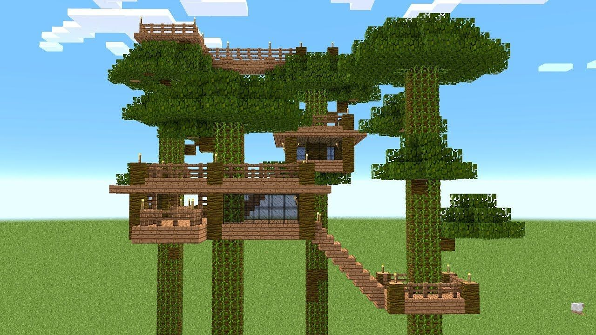
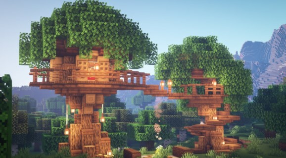

1 Gather a lot of wood. You can gather wood from trees by attacking the trunks with your fists or an axe. Gather around 600 to 1000 blocks of wood. Remember that different tree types have different color wood. Make sure you use the same type of wood when building your treehouse trunk. Try building your treehouse near a forest or jungle so that you have an abundance of wood nearby.
2 Make the trunk of the treehouse out of wood from trees. This is the trunk of the treehouse. You can gather wood from trees by attacking the trunks with your fists or an axe. A small treehouse trunk can about 1x1 or 2x2 blocks thick. It should be between 8 - 20 blocks high. A large treehouse can be a minimum of 4x4 blocks thick, and hollow on the inside as well as a minimum of 30 to 80 block high. You can also try building a treehouse out of an existing tree. Just clear the leaves around the trunk so you can build near the top.
3 Build ladders from the bottom to the top of the trunk. This allows you to climb up the tree to where you will eventually be living. In order to build ladder pieces, you'll need to craft wooden planks from wood, and then craft sticks from the wooden planks. You can then craft ladders from 7 sticks using a crafting table. If you are building a large tree trunk that is hollow on the inside, you can put the ladder inside the tree trunk. Just be sure to leave an opening with a door at the base of the tree trunk so you can enter. Alternatively, you can craft stairs and build a spiral staircase around the outside or inside of the trunk, instead of ladders.
4 Build the base of your house near the top of the trunk. The base can be built on top of the trunk or around the trunk near the top. The base of the house should be made from wooden planks. You can make the base any size you want. It should be big enough to fit a bed, crafting table, a couple of chests, a furnace, whatever else you want to need, with enough room to space that you can move around inside. Place a trapdoor above the ladder so you have a closable entrance to your treehouse.
5 Build the walls. The walls of the treehouse should be built around the edges of the base. You can build a half wall (1 block high) or a full wall (2 to 4 blocks high). The wall can be made out of wood, wooden planks, or any material you want.
6 Build the roof. The roof should be about 3 to 4 blocks above the base. The roof can be built out of wooden planks or slabs or any other material you want. You may need to build extra ladders or platforms to stand on so you can reach while building the roof. When building at tall heights, be careful not to fall. Use sneak mode to walk slower.
7 Make windows out of glass panes. You can make glass by smelting sand in a furnace. You can then craft glass panes out of glass using a crafting table.
8 Decorate the inside. After crafting the basic structure of your treehouse, you can get creative and decorate the inside. If the treehouse is large enough, you can erect walls to make different rooms. You can add torches for light, furniture, or paintings. You can even build a deck outside the house out of wooden planks or slabs.
9 Build a walkway to other treehouses (optional). Do this if you want to craft a treehouse village, craft other treehouses, or trunks with platforms on top in close proximity to your treehouse. They should be about the same height as your treehouse. Then build a bridge out of wooden planks or slabs to connect the treehouses and platforms.
10 Add fences for railings. Be sure to add fences around any decks, or bridges around your treehouse or connecting your treehouses. Fences can be crafted from 4 wooden planks and 2 sticks using a crafting table.
Tips Make it on a really tall tree so you can watch the sunset and see mobs that are far away. If you're making your treehouse out of wood, do not make a lava pool, it will burn down your house. Bone meal instantly turns saplings into full-grown trees If you want to make one fast, find a tree and build on its branches, but remove some leaves, not all of them but some of them to make it look more like a tree house. Don't forget to build an entrance to your treehouse. Get a wide view of the surrounding area by building your treehouse on the tallest tree, make a lookout point or build more floors. In the case of a lightning storm, cover the roof with cobblestone slabs. Fireproof, lightning proof, and mod-spawn proof! If you want to make a treehouse out of a natural tree but can't find one big enough, use jungle or spruce giants. Place saplings of one of those two trees in a 2X2 formation to get massive trees. Start placing blocks in whatever design you'd like and build up from there. Finally, put a roof on and furnish it. Use torches to light your treehouse. This ensures mobs won't spawn in your house.
  How to make the Easiest tree house ever made in Minecraft! How to make a tree house in Minecraft!